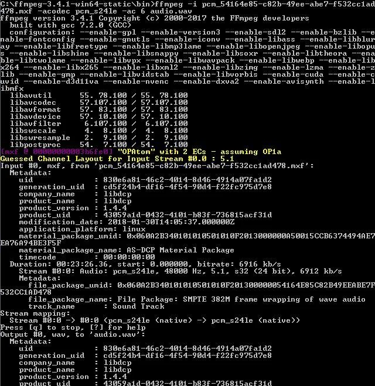
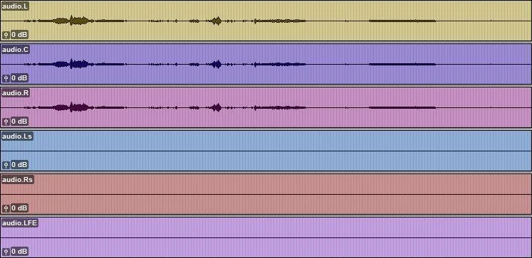
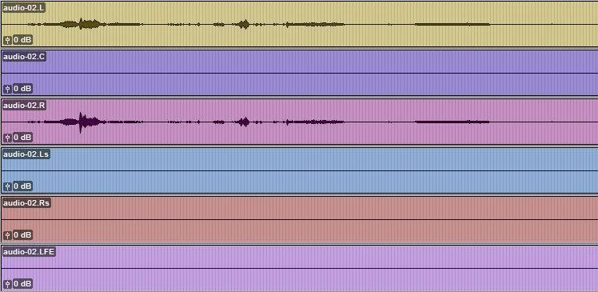
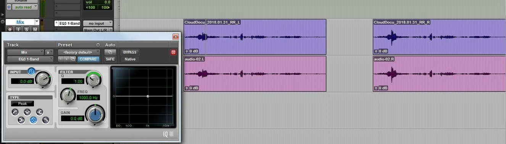

I will always check the MXF from the DCP from now on. When in doubt, deliver six mono tracks (L, C, R, Ls, Rs, LFE) even if only L and R carry content.
First, a short introduction of why I ended up testing the sound MXF.
Background
A short film for which I did the sound recording and design was selected at the Berlin International Film Festival. The DCP was made at a post-production facility in Mumbai. My team asked for the subtitle font size to be set to 21 instead of the usual 38 (or 36?). There are very few dialogues and the usual subtitle size is way too big for our liking.
The technical team from Berlin wrote back requesting if we would be willing to send another DCP with bigger subtitles. The subtitles in the DCP that was made were in the CPL.xml format and could not be tampered with using any of the free DCP-making software. We decided to make another DCP from the graded DPX files we had. I used DCP-o-matic with the stereo sound mix and an .srt subtitle file. The new DCP was fine with respect to subtitles.
We played the earlier DCP to compare subtitle size and the new one was better-but we noticed quite a bit of difference between the sound in the two DCPs. The room we were testing in was not calibrated to judge which was better, but there definitely was a difference. I was getting worried. Everything I had read suggested that DCP-making software does not usually tamper with sound files.
Extracting audio from the DCP MXF
I decided the best way to see what was happening was to convert the *_pcm.mxf files (which contain the audio) from both DCPs to WAV and compare them with the original stereo mix.
After a little research I downloaded ffmpeg and used a command like:
ffmpeg -i Name_DCP_PCM.mxf -acodec pcm_s24le -ac 6 audio.wavThis extracts the MXF into a 5.1 WAV file.

What showed up in Pro Tools
I converted both MXF files and imported them into Pro Tools. The DCP from the post facility (apparently made with Qube) had content in L, C, and R-the software had derived that from the stereo track we supplied. Ls, Rs, and LFE were empty. Some reading suggested DCPs accept mono, 3.0, 5.1, 7.1, and other layouts.

The DCP made with DCP-o-matic had the correct content on L and R; C, Ls, Rs, and LFE were blank.

Verifying against the original mix
To verify the tracks were not altered, I aligned L and R from each DCP with L and R from my stereo mix, inserted the default 1-Band EQ on the mix track, and flipped phase. Playback cancelled completely against the DCP tracks-so the stereo content matched.

It is best to deliver six mono tracks (named L, C, R, Ls, Rs, LFE) even when only L and R have content and the rest are empty.
Note on stereo extraction
The following command converts the MXF audio to stereo-which added to my confusion at first:
ffmpeg -i Name_DCP_PCM.mxf -acodec pcm_s24le -ac 2 audio.wav